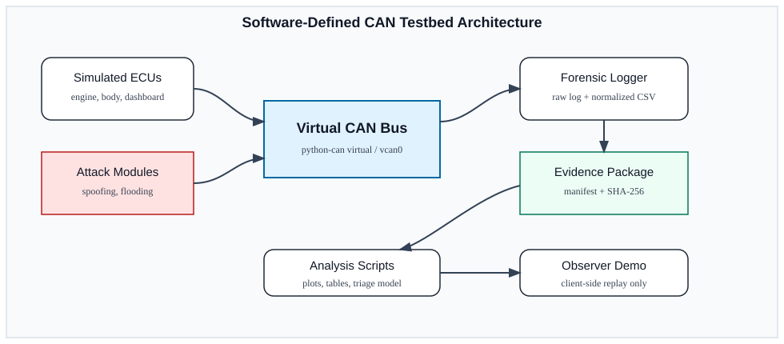
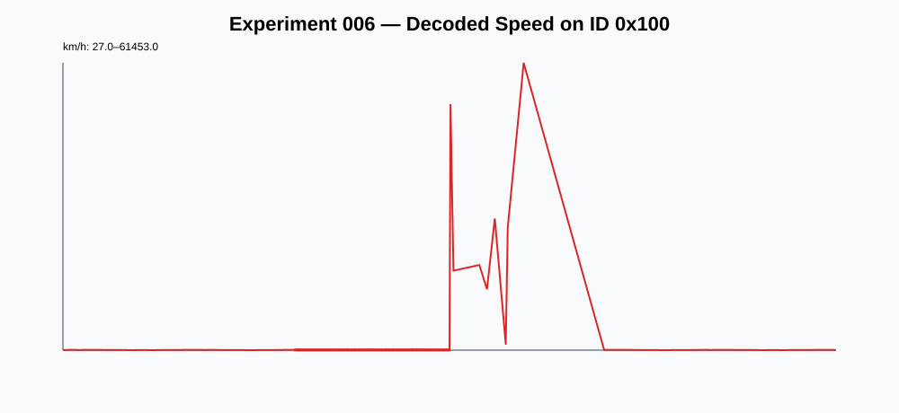
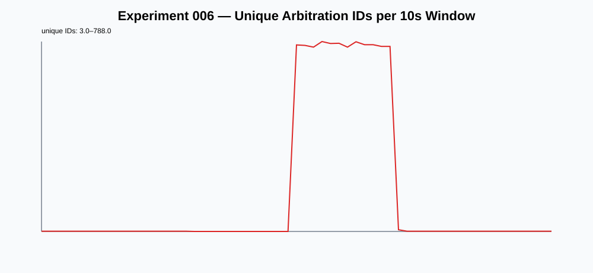

A Software-Defined Low-Cost CAN Testbed for Automotive Cybersecurity Education and Forensic Analysis
Abstract—Modern vehicles rely on distributed electronic control units interconnected through in-vehicle networks such as the Controller Area Network (CAN). Although CAN remains widely deployed, its legacy design lacks native authentication, confidentiality, and message-origin verification. Access to realistic automotive cybersecurity experimentation is still limited for students, forensic practitioners, and researchers in resource-constrained environments because commercial hardware-in-the-loop platforms, instrumented vehicles, and documented electronic control units can be expensive or unsafe to operate. This paper presents a software-defined, low-cost CAN testbed for automotive cybersecurity education and preliminary forensic analysis. The platform combines virtual CAN traffic generation, controlled spoofing and flooding scenarios, structured logging, normalized datasets, evidence manifests, and SHA-256 hash preservation. Two experiments were executed, including a 10-minute run that generated 40,200 frames and a combined dataset of 42,288 labeled CAN frames. A simple rule-based forensic triage baseline over 1-second windows achieved 0.9984 accuracy and 0.9982 macro-F1 on the generated dataset. The result is not proposed as a real-vehicle intrusion detection benchmark; instead, it demonstrates a reproducible workflow for safe training, artifact generation, and evidence-aware CAN traffic analysis. The paper also discusses limitations of software-only simulation and a path toward future hardware-in-the-loop validation with legacy ECUs.
Index Terms—automotive cybersecurity, CAN bus, digital forensics, testbed, SocketCAN, virtual CAN, intrusion detection, reproducibility, education.
I. Introduction
Automotive systems have evolved into distributed cyber-physical platforms composed of electronic control units (ECUs), sensors, actuators, gateways, and in-vehicle networks. The Controller Area Network (CAN) remains a central communication technology in many production and legacy vehicles. Its original design favors robustness, timing, and cost, but it does not provide native authentication, confidentiality, or strong message-origin guarantees. As a consequence, once an adversary reaches an in-vehicle network segment, forged or replayed frames may be accepted by receivers that only evaluate arbitration identifiers and payload semantics.
Research in automotive cybersecurity has produced physical benches, hardware-in-the-loop (HIL) platforms, public datasets, and intrusion detection systems. However, these assets are not always accessible to education and forensic communities. Real vehicles can be expensive, unsafe to manipulate, and difficult to document. Used ECUs and instrument clusters may require immobilizer pairing, proprietary pinouts, and bench power constraints. Commercial HIL equipment may exceed the budget of many classrooms, small laboratories, and practitioners in emerging markets.
This work addresses that gap by proposing a software-defined CAN testbed that can be reproduced with commodity computing resources. The current version uses Python, python-can, virtual CAN channels, structured logs, and browser-accessible artifacts. It supports controlled traffic generation, spoofing/fabrication, flooding, recovery phases, and evidence preservation. The emphasis is not on claiming real-vehicle fidelity, but on providing a safe bridge between theoretical CAN security concepts and practical evidence-aware experimentation.
The main contributions are: (i) a low-cost software-defined CAN testbed architecture; (ii) controlled attack scenarios with labeled traffic; (iii) an evidence workflow with raw logs, normalized CSV files, manifests, and SHA-256 hashes; (iv) a small English dataset with 42,288 labeled frames; and (v) an explainable rule-based forensic triage baseline.
II. Background and Related Work
Classic studies demonstrated that modern vehicles expose security-relevant attack surfaces through in-vehicle and external interfaces [1]–[3]. These works established that CAN traffic manipulation can influence vehicle behavior when attackers obtain network access. Subsequent surveys and evaluations have documented CAN security challenges, including lack of authentication, replay susceptibility, bus availability concerns, and challenges in reverse engineering proprietary signals [4]–[6].
Automotive testbeds range from software simulators to benches with commercial off-the-shelf ECUs. VitroBench provides a table-top environment for manipulating in-vehicle networks and COTS ECUs [7]. Other CAN testbed frameworks focus on controlled cyber-physical experimentation and safer evaluation of attacks [8]. CANBench and related low-cost efforts show that accessible components can support practical experimentation [9]. More advanced HIL and FPGA-based frameworks provide higher fidelity but increase cost and complexity [10].
Public CAN datasets, such as ROAD and can-train-and-test, support intrusion detection research and benchmarking [11], [12]. Dataset quality studies also warn that CAN datasets may suffer from unrealistic artifacts, inconsistent labels, and limited comparability [13]. Our work therefore positions its dataset as an educational and forensic-readiness artifact rather than a replacement for real moving-vehicle datasets.
Automotive digital forensics introduces additional requirements: preservation, traceability, repeatability, and clear scope boundaries. Reverse engineering methods such as READ illustrate the difficulty of interpreting proprietary CAN frames without DBC files or OEM documentation [14]. This testbed addresses the early educational layer of that problem by making labels, semantics, and evidence artifacts explicit.

III. Testbed Design
A. Architecture
Figure 1 summarizes the proposed architecture. The bus layer can be implemented with a python-can virtual backend or SocketCAN/vcan when available. Simulated ECUs generate periodic frames representing engine/cluster state, body status, display-related state, and background traffic. Attack modules inject fabricated state or randomized high-cardinality traffic. A forensic logger records both raw annotated CAN-style logs and normalized CSV files.
The testbed intentionally separates execution artifacts from observer artifacts. The web demo is client-side only and replays previously generated data. It does not execute commands on the server, transmit CAN frames, or interact with real hardware. This design supports demonstrations for reviewers, students, or observers without creating live operational risk.
B. Evidence Workflow
Each experiment is treated as an evidence package. The package includes the input attack plan, raw annotated CAN log, normalized frame CSV, findings in JSON and Markdown, execution output, and a manifest with SHA-256 hashes. This makes the workflow compatible with forensic teaching goals: the dataset can be inspected, replayed, summarized, and validated without relying on undocumented state.
C. Safety Boundary
All experiments reported here were executed in authorized software-only environments. No vehicle, ECU, physical CAN adapter, external network, or operational system was targeted. This boundary is central to the contribution: the platform lowers the barrier to learning and preliminary analysis while avoiding unsafe experiments on real vehicles.
IV. Experimental Methodology
The experiments are organized into four phases. The baseline phase generates normal periodic traffic from simulated ECUs. The spoofing phase fabricates vehicle state, primarily on arbitration ID 0x100, which encodes a didactic speed signal. The flooding phase injects randomized arbitration IDs and payloads to create high-cardinality noise. The recovery phase returns to normal traffic, enabling before/during/after comparison.
Two experiments were used in this draft. Experiment 005 is a short proof-of-concept attack run. Experiment 006 is a longer 10-minute run intended for statistical analysis. The combined normalized dataset contains 42,288 frames. Experiment 006 generated 40,200 frames over 600.06 seconds.
Frame Count by Phase in Experiment 006
| Phase | Frames | Purpose |
|---|---|---|
| Baseline | 11,157 | Normal simulated traffic |
| Spoofing | 6,240 | Fabricated speed/state |
| Flooding | 11,646 | High-cardinality noise |
| Recovery | 11,157 | Return to normal traffic |
V. Results
A. Dataset Overview
The combined dataset contains 42,288 CAN frames. The most frequent arbitration IDs are 0x100, 0x188, 0x120, and 0x300, which represent the stable simulated traffic sources. Flooding introduces additional randomized IDs with lower individual counts but higher diversity.
B. Spoofing Effect on Decoded Speed
The testbed encodes a didactic speed signal in arbitration ID 0x100. In Experiment 006, the baseline phase ranged from 27 to 92 km/h, with a mean of 61.04 km/h. The spoofing phase produced fabricated values from 180 to 200 km/h, with a mean of 195.00 km/h. The recovery phase returned to a normal range of 27 to 92 km/h, with a mean of 61.56 km/h.

0x100 during Experiment 006. The spoofing window is visible as a transition from normal simulated values to fabricated high-speed values.C. Flooding and ID Diversity
Payload entropy and ID cardinality provide simple indicators of flooding. In the combined dataset, payload entropy is approximately 2.94 bits during baseline and recovery, 2.48 bits during spoofing, and 7.998 bits during flooding. This reflects the randomized payload generation used to simulate high-noise traffic.

VI. Rule-Based Forensic Triage
To provide an explainable reference model, a rule-based forensic triage baseline was evaluated over 1-second windows. The model uses three interpretable features: unique arbitration ID count, unknown-ID ratio, and decoded speed on ID 0x100. A window is classified as flooding if it has high ID cardinality or a high ratio of IDs outside the expected baseline set. It is classified as spoofing if decoded speed exceeds 130 km/h. Otherwise, it is classified as normal.
Across 615 windows, the baseline achieved 0.9984 accuracy and 0.9982 macro-F1. Per-class F1 was 0.9986 for normal traffic, 1.0000 for spoofing, and 0.9960 for flooding. These numbers primarily demonstrate internal consistency of labels and generated traffic; they should not be interpreted as real-world IDS performance.
Rule-Based Triage Confusion Matrix
| Expected | Normal | Spoofing | Flooding |
|---|---|---|---|
| Normal | 368 | 0 | 1 |
| Spoofing | 0 | 123 | 0 |
| Flooding | 0 | 0 | 123 |

VII. Discussion
The main value of the testbed is reproducibility. A student or practitioner can inspect the input plan, run or replay the experiment, verify hashes, and compare generated plots with expected phase labels. This makes the artifact useful for education, forensic readiness exercises, and early-stage CAN analysis.
Compared with HIL benches and COTS ECU platforms, the current approach trades physical fidelity for cost, safety, and accessibility. It does not replace real hardware validation. Instead, it provides a controlled environment for teaching concepts before students or analysts interact with physical modules. The observer demo also supports communication with non-specialist stakeholders because it presents the attack timeline, dashboard state, console output, and findings without executing live commands.
The evidence workflow is also important. Automotive cybersecurity demonstrations often emphasize the attack mechanism, whereas forensic analysis requires preservation and traceability. By storing raw logs, normalized files, findings, and manifests, the testbed encourages evidence-aware experimentation from the beginning.
VIII. Limitations
The testbed is software-defined and synthetic. It does not model CAN physical-layer arbitration, electrical noise, transceiver errors, termination problems, bus-off behavior, ECU timing constraints, gateway filtering, or vehicle-specific safety logic. The decoded speed field and semantic labels are didactic. They are designed for transparent experimentation, not for claiming OEM signal accuracy.
The rule-based triage baseline is intentionally simple and evaluated on data generated by the same controlled environment. Therefore, the high scores should be read as evidence of dataset consistency and educational value, not as proof of robustness against real-world adversaries. Future work should compare the software-defined traces with SocketCAN/vcan, ICSim, Caring Caribou workflows, and hardware-in-the-loop experiments using used instrument clusters or legacy ECUs.
IX. Conclusion
This paper presented a software-defined low-cost CAN testbed for automotive cybersecurity education and preliminary forensic analysis. The platform generates labeled CAN traffic, executes controlled spoofing and flooding scenarios, preserves evidence artifacts with SHA-256 hashes, and provides analysis scripts and an observer demo. The current dataset contains 42,288 labeled frames, including a 10-minute experiment with 40,200 frames. An explainable rule-based triage baseline achieved 0.9984 accuracy and 0.9982 macro-F1 on the generated windows, demonstrating internal consistency and suitability for teaching. Future work will extend the platform to SocketCAN hardware, instrument clusters, and legacy ECU benches while preserving the same evidence workflow.
References
[1] K. Koscher et al., “Experimental security analysis of a modern automobile,” in Proc. IEEE Symposium on Security and Privacy, 2010.
[2] S. Checkoway et al., “Comprehensive experimental analyses of automotive attack surfaces,” in Proc. USENIX Security Symposium, 2011.
[3] C. Miller and C. Valasek, “Remote exploitation of an unaltered passenger vehicle,” Black Hat USA, 2015.
[4] M. Bozdal, M. Samie, S. Aslam, and I. Jennions, “Evaluation of CAN bus security challenges,” Sensors, vol. 20, no. 8, 2020.
[5] G. Macher, E. Armengaud, E. Brenner, and C. Kreiner, “Threat and risk assessment methodologies in the automotive domain,” in Proc. Computer Safety, Reliability, and Security, 2016.
[6] A. Dibaei et al., “Investigating the prospect of leveraging blockchain and machine learning to secure vehicular networks,” IEEE Transactions on Intelligent Transportation Systems, 2020.
[7] “VitroBench: Manipulating in-vehicle networks and COTS ECUs on your table,” Vehicular Communications, vol. 43, 2023.
[8] “A CAN bus security testbed framework for automotive cyber-physical systems,” 2022, doi: 10.1155/2022/7176194.
[9] “CANBench: Development and evaluation of CANBench,” Brigham Young University ScholarsArchive.
[10] “FAV-NSS: HIL framework for automotive network security strategies,” 2025.
[11] S. Verma et al., “A comprehensive guide to CAN IDS data and introduction of the ROAD dataset,” PLOS ONE, 2024.
[12] “can-train-and-test: A curated CAN dataset for automotive intrusion detection,” Computers & Security, 2024.
[13] “can-sleuth: Investigating and evaluating automotive intrusion detection datasets,” ACM, 2024.
[14] M. Marchetti and D. Stabili, “READ: Reverse engineering of automotive data frames,” IEEE, 2018.
[15] ISO/SAE 21434, “Road vehicles — Cybersecurity engineering,” International Organization for Standardization, 2021.
[16] UNECE, “UN Regulation No. 155 — Cyber Security and Cyber Security Management System,” United Nations Economic Commission for Europe.